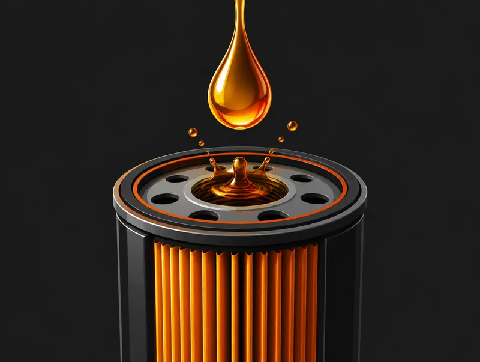
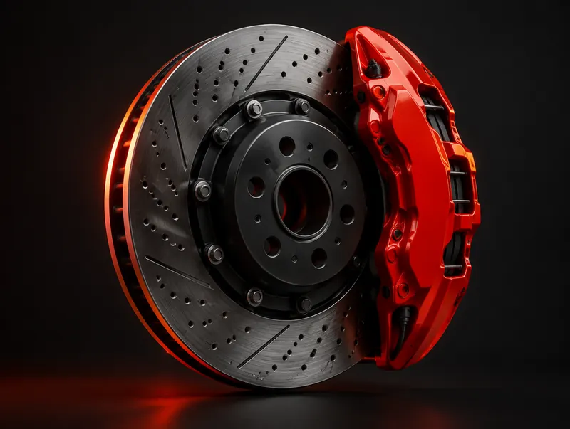
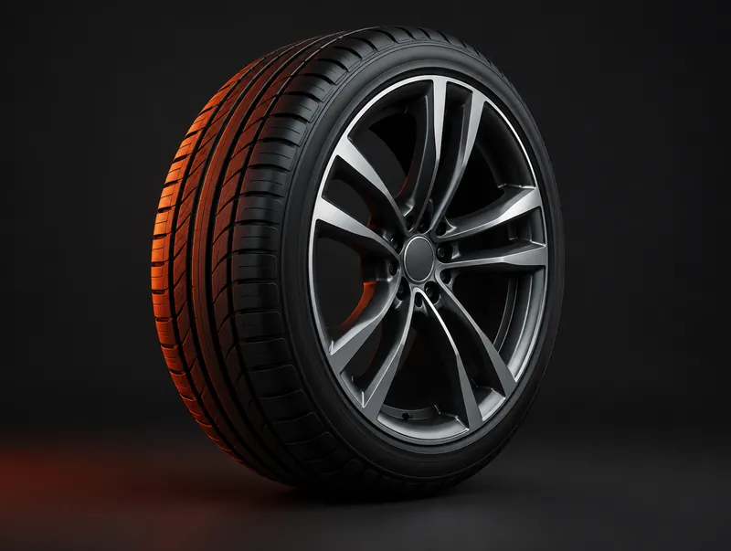
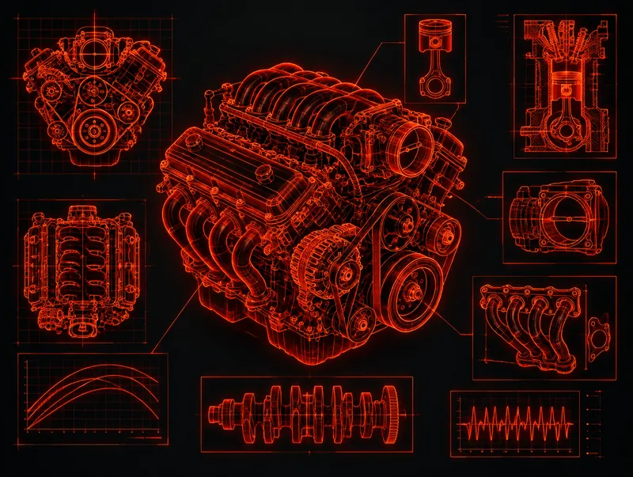
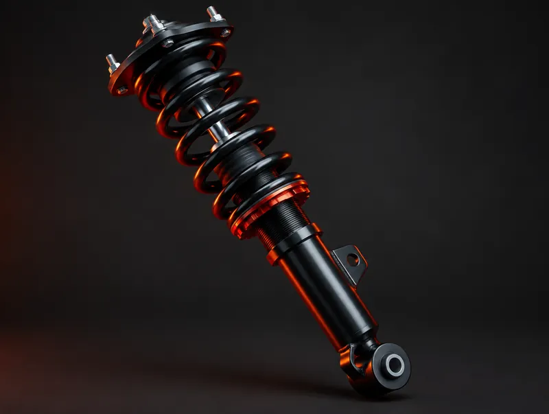
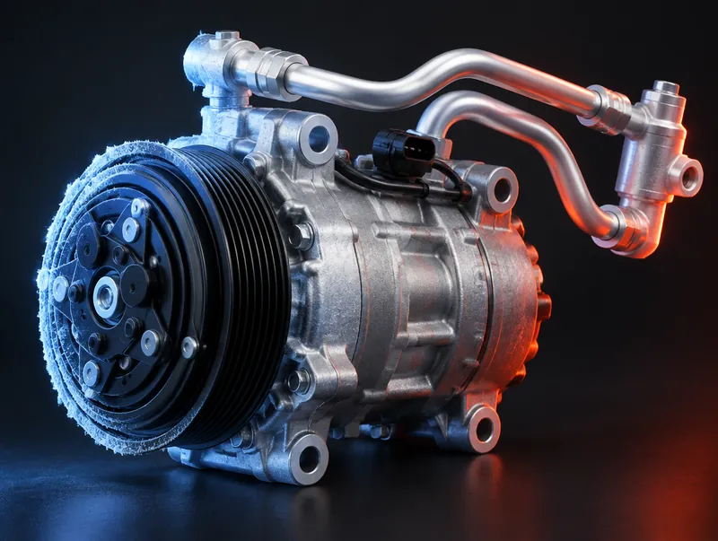
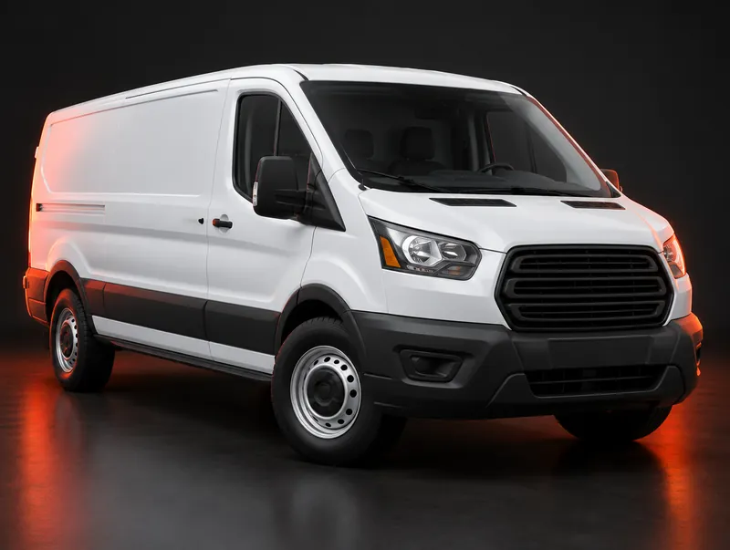

Reparación de autos e inspecciones estatales en Phoenixville, PA
Mantenga su vehículo en marcha con reparaciones mecánicas, mantenimiento de rutina y servicios de inspección de Diverse Autoworks. Desde cambios de aceite y frenos hasta diagnósticos y reparaciones para flotas, nuestro equipo está aquí para ayudarle a cuidar su vehículo.
Inspecciones estatales paraAutosCamionesRemolquesMotocicletas
¿Qué le pasa a su vehículo?
Elija lo que nota y le indicaremos el servicio adecuado.
Cuide su vehículo, todo en un solo lugar
Conozca nuestros servicios de inspección, mantenimiento y reparación. Llámenos para hablar de su vehículo y del trabajo que necesita.

Inspecciones estatales y emisiones
Inspecciones estatales y pruebas de emisiones para autos, camiones, remolques y motocicletas.

Aceite y mantenimiento
Cambios de aceite, filtros de cabina y de combustible, bandas de accesorios, plumillas.

Frenos y rotores
Servicio de frenos y rotores.

Llantas y alineación
Llantas, reparación de llantas y alineación.

Diagnóstico y mantenimiento del motor
Análisis del motor, afinaciones y limpieza de inyectores.

Dirección y suspensión
Piezas de dirección y suspensión, amortiguadores y puntales.

A/C y enfriamiento
Servicio de A/C automotriz y del sistema de enfriamiento.

Reparaciones para flotas
Reparaciones para vehículos de negocios.
Inspecciones estatales de motocicletas
Diverse Autoworks ofrece inspecciones estatales para motocicletas, además de autos, camiones y remolques. Llame para coordinar una inspección y confirmar la disponibilidad.

Toque un punto numerado para ver los elementos que enumera PennDOT.
Lo que valoran nuestros clientes
Los clientes mencionan con frecuencia las explicaciones claras, el trato amable, los precios justos y las recomendaciones de reparación prácticas.
- Explicaciones claras
- Trato amable
- Precios justos
- Recomendaciones prácticas
“They also give honest assessments of vehicle status and make reasonable recommendations for repairs and/or replacements.”
“Great experience with motorcycle inspection. Great availability for appointment. Fast service!”
“always friendly service, competitive pricing, and they may recommend additional services, but always as a recommendation, no pressure”
“They listened to me and helped me diagnose the problem.”
Reparaciones para flotas
¿Necesita apoyo de reparación para vehículos de negocio? Diverse Autoworks ofrece reparaciones para flotas. Comuníquese con el taller para hablar de sus vehículos y sus necesidades de servicio.
Reparaciones para flotasServicios de notario público
Los servicios de notario público están disponibles de lunes a viernes, de 8 a. m. a 3 p. m. Llame con anticipación para confirmar la disponibilidad y los requisitos para sus documentos.
Horario y detalles del notarioLlame o visite Diverse Autoworks
Nos encuentra en 1415 Pawlings Road, en Phoenixville. Llame al 610-650-0316 para hablar de una reparación, solicitar una inspección o preguntar por los servicios para flotas y de notario público.
610-650-0316- HorarioTaller abierto de lunes a viernes. Llame para conocer el horario actual.
- Notario públicoNotario: de lunes a viernes, de 8 a. m. a 3 p. m.